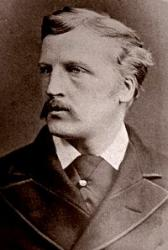
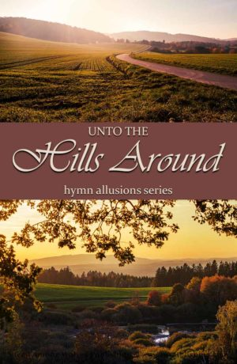

1156 Unto the Hills 我要抬頭向眾山嶺舉目
_J.D. Campbell SE Samonte
|
|
34. 我要抬頭向眾山嶺舉目 (Unto
The Hills Around) |
|
1 Unto the hills around do I lift up
My longing eyes;
O whence for me shall my salvation come,
From whence arise?
From God the Lord doth come my certain aid,
From God the Lord who heaven and earth hath made. 2 He will not suffer
that thy foot be moved:
Safe shalt thou be.
No careless slumber shall His eyelids close,
Who keepeth thee.
Behold our God the Lord, He slumbereth ne'er,
Who keepeth Israel in His holy care.
3 Jehovah is Himself thy keeper true,
Thy changeless shade;
Jehovah thy defense on thy right hand
Himself hath made.
And thee no sun by day shall ever smite;
No moon shall harm thee in the silent night.
4 From every evil shall He keep thy soul,
From every sin;
Jehovah shall preserve thy going out,
Thy coming in.
Above thee watching, He whom we adore
Shall keep thee henceforth, yea, forevermore.
Source: African
Methodist Episcopal Church Hymnal #87
|
我要抬頭向眾山嶺舉目
一 我要抬頭，向眾山嶺舉目，切切仰望：
我的幫助，我切需的幫助，來自何方？
我的幫助從耶和華而來；
祂曾創造諸天、大 地、洋 海。
二 祂必不叫你的腳步動搖，你可安穩！
保護你的不打盹，不睡覺，你可安心！
看哪！那保護以色列的神，
祂不睡覺，祂永遠不打盹。
三 主耶和華親作你的護庇， 信實不變！
主耶和華親作你的蔭蔽，站你右邊！
白日太陽必不將你灼傷，
夜間月亮必不叫你遭殃。
四 祂保守你免受一切災害，平安無恙！
你出，你入，祂都保護無駭， 在上守望！
可頌之神，我讚美你恩典，
因你保守從今時到永遠。
|
|

https://hymnary.org/hymn/VU1996/page/853 |
|
|
|
 Unto
the Hills SE Samontehttps://www.youtube.com/watch?v=h-OPPkenXvY
Unto
the Hills SE Samontehttps://www.youtube.com/watch?v=h-OPPkenXvY
詩人約翰甘寶（John D. S. Campbell 1845-1914），
是英國著名國會議
員。他和我現在所居住的加拿大曾有過關係。因他曾出任加拿大總督。他和你可能也有相同之處，他是一位很愛主的基督徒，他的信心和追求表現在這首詩歌里面。其靈感可能來自詩篇121首，人軟弱就會向下看，人有信心就會往上望。基督徒若更多追求神的聖潔和偉大，能力就從衪的寶座上流入我們里面，成為我們的力量，去過每一天的生活。我們的眼晴也更不斷的向上注視主，天天和衪有交通，讓衪成為我們的永遠的保障。
|
Short Name: |
John Douglas Sutherland Campbell, Duke of
Argyll |
|
Full Name: |
Argyll, John Douglas Sutherland Campbell, Duke
of, 1845-1914 |
|
Birth Year: |
1845 |
|
Death Year: |
1914 |
John George Henry
Douglas Sutherland Campbell LLD [Duke of Argyll]
United Kingdom 1845-1914.

Born in London to George
Campbell, Marques of Lorne, and styled Earl of Campbell from birth, he
assumed his father's title at the age of 21 months, when his father became
8th Duke of Argyll. He bore that title until age 54. Educated at Edinburgh,
Eton College, St. Andrews and at Trinity College, Cambridge, he also went to
the National Art Training School. He traveled widely for 10 years throughout
North and Central America, writing literature and poetry. In the UK, from
1868, he represented the constituency of Argyllshire as a Liberal member of
Parliament in the House of Commons. He made little impression there. He was
appointed Lt. Col. Commandant of the 1st Argyll & Bute Artillary Volunteers.
He married Queen Victoria's 4th daughter, Princess Louise. They shared
interest for art, but the marriage was childless and unhappy, and they spent
much time apart.
At 33, he was appointed Governor General of Canada. He and Louise made many
contributions to Canadian society, especially in the arts and sciences. They
encouraged establishment of the Royal Society of Canada, the Royal Canadian
Academy of Arts, and the National Gallery of Canada, even selecting some of
its paintings. Campbell was also involved in completion of the Canadain
Pacific Railway and a hospital in British Columbia. He and his wife held
lavish parties while in Canada. In 1881, Louise returned to England, and the
Lord also in 1883, when he published his memoirs of Canada and Scotland. He
was Governor and Constable of Windsor Castle from 1892 to 1914. He died of
pneumonia in 1914. He received 4 Knightings and 4 special honors for his
accomplishments. Towns, buildings, streets and parks were named for him.
John Perry
|
Title: |
SANDON (Purday) |
|
Composer: |
Charles H. Purday (1860) |
|
Meter: |
10.4.10.4.10.10 |
|
Incipit: |
33343 32123 12713 |
|
Key: |
F Major |
|
Copyright: |
Public Domain |
|
Short Name: |
Charles H. Purday |
|
Full Name: |
Purday, Charles H. (Charles Henry), 1799-1885 |
|
Birth Year: |
1799 |
|
Death Year: |
1885 |
Charles H. Purday (1799-1885)
A publisher, composer, lecturer, and writer, Purday had a special interest
in church music. He published Crown Court Psalmody (1854), Church
and Home Metrical Psalter and Hymnal (1860), which
included SANDON, and, with Frances Havergal, Songs of
Peace and Joy (1879). A precentor in the Scottish Church
in Crown Court, London, Purday sang at the coronation of Queen Victoria. In
the publishing field he is known as a strong proponent of better copyright
laws to protect the works of authors and publishers.
Bert Polman
"UNTO THE HILLS"
"I will lift up mine eyes unto the hills, from whence cometh my help" (Ps.
121:1)
INTRO.:
A hymn which encourages us to lift up our eyes to the hills from whence comes
our help is "Unto the Hills" (#648 in Hymns
for Worship Revised). The text, a paraphrase of Psalm 121, was written by
John Douglas Sutherland Campbell, who was born at St. James, Staffordhouse, in
Westminster, Middlesex, England, on Aug. 6, 1845. As chief of the Campbell
clans, he was Marquis of Lorne and later became the ninth Duke of Argyll. After
his education at Eton, at St. Andrews, and at Trinity College in Cambridge, he
became a liberal member of Parliament for Argyll in 1868. Then in 1871, he
married Princess Louisa Alberta, the fourth daughter of Queen Victoria. This
metrical version of Psalm 121 is sometimes dated 1866 or 1870, but it was first
published in his 1877 Book
of Psalms, Literally Rendered in Verse. The 1866 and 1870 dates could both
be misprints for 1877, or, given Donald Hustad’s observation that "it was
written…before he became a public figure," which occurred following his
marriage, one of the earlier dates could be correct for the actual writing and
it was just not published until 1877.
After serving for three years as private secretary to his father, who was
Secretary of State for India, Campbell was appointed Governor-General of Canada
where he served in this capacity as the official representative of the Queen
from 1878 to 1883. As he was quite popular with the Canadians, the province of
Alberta was named for his wife. Also, he founded the Royal Society of Canada to
promote the arts and sciences and authored two books about the country. At the
end of his term in office, he returned to England and again served in Parliament
as a Unionist member for South Manchester from 1895 to 1900 and as Governor and
Constable of Windsor Castle. In addition, he was a good friend of the Poet
Laureate Alfred Tennyson. Apparently Campbell, or someone, made a few
alterations in "Unto the Hills" in 1909. Well known as a writer of both prose
and poetry, in addition to being a strong and earnest churchman, Campbell died
on May 2, 1914, of double pneumonia while vacationing at East Cowes on the Isle
of Wight.
All of our books use a tune (Sandon or Landon) which had been composed in 1860
by Charles Henry Purday (1799-1855). It was originally published in his Church
and Home Metrical Psalter and Hymnal with the text "Lead,
Kindly Light," written in 1833 by John Henry Newman. However, some of our books
also use this same tune with another hymn, "Light of the World" written by Laura
O. D. Chant. Many older books use another tune (Lux Benigna) composed in 1885 by
Albert Lister Peace (1844-1912). Peace is perhaps best remembered as the
composer for the standard tune used with George Mattheson’s "O Love That Will
Not Let Me Go." Also he composed a tune that some of our books use with Charles
Wesley’s "Must We Be to the Judgment Brought." The original Hymns
for Worship contained the entire hymn with Purday’s original
tune, but when the Revised edition came out with the tune arranged by Craig
Roberts and editor R. J. Stevens, for some reason only two stanzas, the first
and the fourth, were used.
Among hymnbooks published by members of the Lord’s church during the twentieth
century for use in churches of Christ, "Unto the Hills" appeared in the 1922
edition of the 1921 Great
Songs of the Church (No. 1) and the 1937 Great
Songs of the Church No. 2 both edited by E. L. Jorgenson; and
the 1963 Christian
Hymnal edited by J. Nelson Slater. Today it may be found
in the 1971 Songs
of the Church, the 1990 Songs
of the Church 21st C. Ed., and the 1994 Songs
of Faith and Praise all edited by Alton H. Howard; the 1983
edition of the 1978 Church
Gospel Songs and Hymns edited by V. E. Howard; the 1986 Great
Songs Revised edited by Forrest M. McCann; and the 1992 Praise
for the Lord edited by John P. Wiegand; in addition to Hymns
for Worship, and the 2009 Favorite
Songs of the Church edited by Robert J. Taylor Jr.
The hymn exhorts us to look to God above for assistance in the trials and
tribulations of life.
I. According to stanza 1, we find that our hel comes from God.
"Unto the hills around do I lift up My longing eyes;
O whence for me shall my salvation come, From whence arise?
From God the Lord doth come my certain aid,
From God the Lord, who heaven and earth hath made."
A. Lifting up our eyes to the hills symbolizes looking to God above for our
help: Ps. 121:2
B. The Lord has promised to be our aid or helper: Heb. 13:6
C. And we can trust His power to help us because He made heaven and earth: Gen.
1:1
II. According to stanza 2, we find that God will keep those who trust Him.
"He will not suffer that thy foot be moved: Safe shalt thou be;
No careless slumber shall His eyelids close, Who keepeth thee.
Behold, He sleepeth not, He slumbereth ne’er,
(The altered version reads, "Behold, our God, the Lord, He slumbereth ne’er")
Who keepeth Israel in His holy care."
A. His promise to watch over and protect His people is symbolized by not
suffering that their foot be moved: Ps. 91:11-12
B. We know that God will keep us safe because He never sleeps nor slumbers: Ps.
121:3-4
C. Thus, we can rest assured that He cares for us: 1 Pet. 5:7
III. According to stanza 3, we find that God is changeless in His care.
"Jehovah is Himself thy keeper true: Thy changeless shade;
Jehovah evermore on thy right hand Himself hath made.
(The altered version reads, "Jehovah thy defense on thy right hand")
And thee no sun by day shall ever smite,
No moon shall harm thee in the silent night."
A. The Lord has promised to be our keeper if we follow Him: Prov. 3:26
B. The idea of being on one’s right hand suggests present and ready to help:
Ps. 16:8
C. Because God will always protect us, we need fear neither the hot sun nor
darkness: Ps. 121:5-6
IV. According to stanza 4, we find that God will prserve us unto eternity.
"From every evil shall He keep thy soul, From every sin;
Jehovah shall preserve thy going out, Thy coming in.
Above thee watching, He whom we adore
Shall keep thee henceforth, yea, forever more."
A. Certainly, we look to God to lead us not into temptation but deliver us from
the evil one: Matt. 6:13
B. Therefore, we trust in His promise to preserve our going out and coming in:
Ps. 41:1-2
C. The Lord will guide us throughlut this life on our journey to heaven: Ps.
121:7-8
CONCL.:
The story is told that one day the pioneer preacher "Raccoon" John Smith
returned from a preaching trip and found his cabin burned to the ground. His
wife and children, except for one son who was visiting a neighbor, had been
killed in the fire. Witnesses reported that in the face of this tragedy, he
knelt to the ground, quoted Psalm 121, and prayed to the Lord as he lifted his
eyes "Unto the Hills."
https://hymnstudiesblog.wordpress.com/2009/12/23/quotunto-the-hillsquot/
This series on Scripture Allusions in Hymns takes a look at some outstanding
hymns based on verses or passages of Scripture, and the aspects of greatness
they display. For a fuller explanation of the series and its topic, check
out our post entitled Identifying
and Analyzing Hymn Allusions.

Are you a person who finds comfort from the Psalms, with their wealth of
promises and assurances of God’s protection and deliverance? Or perhaps
you are a person in need of consolation and scarcely knowing where to turn.
“I will lift up mine eyes unto the hills, from whence cometh my help. My
help cometh from the LORD, which made heaven and earth.” ~ Psalm 121:1,2
Today’s post looks at “Unto the Hills Around,” a faithful paraphrase of Psalm
121 by John Campbell, which captures the comfort and beauty of the Psalm in a
form which is easily memorized and sung. Download
our complimentary PDF of the hymn and Psalm 121 in parallel
passages.
Hymn Details
Name: Unto the Hills Around
Author: John D. Campbell
Paraphrased Passage: Psalm 121
Highlights: “Unto the Hills Around” was part of a
meterized version of the Psalms compiled and largely written by one of Queen
Victoria’s sons-in-law, John Campbell, Duke of Argyll and Marquess of Lorne.
Titled, “The
Book of Psalms: Literally Rendered in Verse,” the volume was written
because, as Campbell notes in his preface, many of the words of the Authorized
Version (another name for the 1650 Scottish Psalter) “which might formerly have
been considered as rhyming together, cannot with modern pronunciation be now
held to do so; and believing that the want of true rhyme is often not agreeable,
it seems probable that there is room for a new version.” This Psalm appears as
the “second version” of Psalm 121 in Campbell’s book, and is consequently not
written in Common Metre as the majority of the Psalms in this volume are.
Faithfulness to the Text
“Unto the Hills Around” is an exceptional example of a faithful meterization.
Perhaps more noticeable than the closeness to the actual words of Psalm 121, is
the remarkable sameness in spirit and flavour. Because of the nature of
paraphrasing, this is difficult to accomplish. Oftentimes, if you take a
Psalm you really love, which is beautiful and flowing in the original, and look
for a meterized version of it, you will end up disappointed because the beauty
was lost in “translation.” The content may be astoundingly close to the
original, but the spirit has
been altered. This is very far from the truth with this paraphrase.
Rather, the author has been able to capture the beauty and flow of the original,
partially because of his evident familiarity with the style of the King James
Version of the Bible. This familiarity renders the paraphrase a
satisfaction to anyone who appreciates the original.

Metre and Rhyming Choices
Part of the reason for the remarkable faithfulness of style lies in the metre
and rhyming choices the author has made. We discussed
in a previous post that simpler rhyming words and longer lines often hold
the key to paraphrases which are both faithful and beautiful.
This is particularly noteworthy in this hymn. If you look closely in verse
one above, you can see that the combination of these two choices has been
employed to the greatest advantage in this meterized Psalm. Line one and
line three don’t rhyme at all, and are quite long at ten syllables apiece,
giving fully thirteen syllables (lines one and two) before the first rhyming
word, a pattern repeated in lines three and four. The closing two lines
that rhyme with each other are also ten syllables long, allowing for a
tremendous amount of freedom in the paraphrase, which is especially important
for this particular Psalm, since it is so light and flowing in the original that
the cramped, abbreviated style necessary for Common Metre would destroy the
original feel.
It is also significant that the four rhyming words used in each verse are quite
simple and obvious rhymes that have plenty of appropriate matches in the English
language. Complex or obscure rhymes can often dictate the direction of the
poem, so in cases like this the wisest choice is a simpler rhyme.

Flow,
Style and Language
The metrical choices which produced the exceptional faithfulness in this hymn,
also allowed the flow and style to be what they are. This is chiefly done
by following the flow and style of the Psalm, as we mentioned above.
Campbell has somehow been able to transfer to his hymn the natural smoothness we
find in the opening verse of Psalm 121: “I will lift up mine eyes unto the
hills, from whence cometh my help.”
Read his first stanza as if it were prose: “Unto the hills around do I lift up
my longing eyes. O whence for me shall my salvation come, from whence
arise? From God, the Lord doth come my certain aid, from God, the Lord,
who heav’n and earth hath made.” See how he has kept the light, smooth
flow even while taking it from prose into poetry. Stanza one is undeniably the
smoothest in this respect, but the entire hymn largely follows this pattern.
Along with his care in following the style of the Psalms, it is clear that the
author is familiar with other
meterized versions. Take a look at this verse from the 1650 Scottish
Psalter:
I to the hills will lift mine eyes,
From whence doth come mine aid.
My safety cometh from the Lord,
Who heav’n and earth hath made.
Of course, it is understandable, and even desirable, that two faithful
meterizations should be very similar in the finished product, but it is also
important to recognize that the style of past versions will often impact the
style and language of later ones.
“Unto the Hills Around”
Psalm 121 is a favourite of mine. I have it hanging up over my bed, and
sometimes I recite it to myself as I’m falling asleep. The soothing flow
and comforting words are pleasant to hear. And because of John Campbell’s
faithfulness and carefulness in paraphrasing, I can sing the Psalm as well, and
remember once again everything that it expresses, finding comfort in the surety
that God will preserve our “going out” and our “coming in”—“from this time
forth, and even forevermore.”
This post may have been shared with the linkups
listed here.
From Wikipedia, the free encyclopedia
Jump to navigationJump
to search
George John Douglas Campbell, 8th
and 1st Duke of Argyll KG, KT, PC, FRS, FRSE (30
April 1823 – 24 April 1900; styled Marquess of Lorne until
1847), was a British polymath and Liberal statesman.
He made a significant geological discovery in the 1850s when his
tenant found fossilized leaves embedded among basalt lava on the
Island of Mull. He also helped to popularize ornithology and
was one of the first to give a detailed account of the principles of
bird flight in the hopes of advancing artificial aerial navigation
(i.e. flying machines). His literary output was extensive writing on
topics varying from science and theology to economy and politics. In
addition to this, he served prominently in the administrations of Lord
Aberdeen, Lord
Palmerston, John
Russell and William
Gladstone.
Background[edit]
Argyll was born at Ardencaple
Castle, Dunbartonshire,
the second but only surviving son of John
Campbell, 7th Duke of Argyll, and his second wife Joan
Glassel, the only daughter of John Glassel.[1] Argyll
succeeded his father as duke in 1847.[1] With
his death he became also hereditary Master
of the Household of Scotland and Sheriff
of Argyllshire.[1]
Political career[edit]
By the time of his succession, Argyll
had already obtained notice as a writer of pamphlets on the disruption
of the Church of Scotland, which he strove to avert, and he
rapidly became prominent on the Liberal side
in parliamentary politics. He was a frequent and eloquent speaker in
the House of Lords.[2] A
close associate of Prince
Albert, he served as Lord
Privy Seal between 1852 and 1855 in the cabinet of Lord
Aberdeen, and then as Postmaster
General between 1855 and 1858 in Lord
Palmerston's first cabinet. He was again Lord Privy
Seal between 1859 and 1866 in the second Palmerston administration,
and then under Lord
Russell's second administration, in which position
he was notable as a strong advocate of the Northern cause in the American
Civil War.
Argyll was a major catalyst of the Education
(Scotland) Act of 1872. Under his leadership in
1866, the Argyll Commission looked into the Scottish schooling
system and found it severely inadequate. The report – eventually
finished in 1869 – was used to call for education reforms. As a
result of this lobbying, the Education
Act (Scotland) 1872 was passed making primary
school education mandatory in Scotland for children aged between 5
and 13.
In William
Ewart Gladstone's first government of 1868 to 1874, Argyll
became Secretary
of State for India, in which role his refusal to promise support
against the Russians to the emir of Afghanistan helped
lead to the Second
Afghan War.[2] Argyll's
wife, née Lady
Elizabeth Georgiana Leveson-Gower, also served as Mistress
of the Robes in this government. Argyll also played
a key role in the establishment of the Royal
Indian Engineering College which functioned from
1872 to 1906. This college which was located on the Coopers Hill
estate, near Egham was set up in order to train civil engineers for
service in the Indian Public
Works Department. In 1871, while actually serving in the
Cabinet, his son and heir, Lord
Lorne, married one of Queen
Victoria's daughters, Princess
Louise, enhancing his status as a leading grandee.
In 1880 he again served under
Gladstone, as Lord
Privy Seal, but resigned on 31 March 1881 in protest at
Gladstone's Land Bill, claiming it would interfere with the rights
of landlords and had been brought in response to terrorism.[3] In
1886, he fully broke with Gladstone over the question of the prime
minister's support for Irish
Home Rule, although he did not join the Liberal
Unionist Party, but pursued an independent course. Having been
already Vice
Lord Lieutenant from 1847,[1] Argyll
held the honorary post of Lord
Lieutenant of Argyllshire from 1862 until his death
in 1900. He was sworn of the Privy
Council in 1853,[4] appointed
a Knight
of the Thistle in 1856[5] and
a Knight
of the Garter in 1883. In 1892 he was created Duke
of Argyll in the Peerage
of the United Kingdom.[6]
Scholarship[edit]
Argyll was also an amateur scientist
dedicated to many areas of science. Aside from his own work in ornithology,
he wrote on anthropology, evolution, glaciology and economics.
He was a leader in the scholarly opposition against Darwinism (1869,
1884b) although he was not against the theory of evolution, Argyll
argued instead for theistic evolution. He did argue against the
erosive capability of glaciers (1873) and was an important economist
(1893) and institutionalist (1884a), in which latter capacity he was
quite similar to his political opponent, Benjamin
Disraeli.
In 1851, he was elected a Fellow
of the Royal Society and was appointed Chancellor
of the University of St Andrews. Three years later, he became
additionally Rector
of the University of Glasgow.[1] In
1849 he was elected a Fellow of the Royal
Society of Edinburgh and served as its president
from 1860 to 1864.[7] In
1855 he became president of the British
Association for the Advancement of Science. From 1872 to 1874 he
was President
of The Geological Society. In 1866, he was a founding member of
the world's first aeronautical society, the Aeronautical
Society of Great Britain (later renamed the Royal
Aeronautical Society),[8] and
served as its president from 1866 to 1895. He was elected a member
of the American
Antiquarian Society in 1869.[9] In
1886, he was elected as a member to the American
Philosophical Society.[10]
Private life[edit]
Argyll was married three times. He
married firstly Lady
Elizabeth Leveson-Gower, eldest daughter of George
Sutherland-Leveson-Gower, 2nd Duke of Sutherland, in 1844.[1] They
had five sons and seven daughters, being:[11]
-
John Campbell, 9th Duke of Argyll (6 August
1845 – 2 May 1914), married Princess
Louise of the United Kingdom on 21 March 1871.
- Lord Archibald Campbell (18
December 1846 – 29 March 1913), married Janey
Callander on 12 January 1869. They had two
children, including Niall
Campbell, 10th Duke of Argyll.
- Lord Walter Campbell (30 July
1848 – 2 May 1889), married Olivia Rowlandson Milns on 14 April
1874. They had two children, including Douglas Walter Campbell,
whose son was Ian
Campbell, 11th Duke of Argyll.
- Lady Edith Campbell (7
November 1849 – 6 July 1913), married Henry
Percy, 7th Duke of Northumberland on 23
December 1868. They had thirteen children.
- Lady Elisabeth Campbell (14
February 1852 – 24 September 1896) she married Lt.-Col. Edward
Harrison Clough-Taylor on 17 July 1880. They had one daughter.
- Lord George Granville Campbell
(25 December 1850 – 21 April 1915), married Sybil Lascelles
Alexander, daughter of James Brace Alexander, on 9 May 1879.
They had three children.
-
Lord Colin Campbell (9 March 1853 – 18 June
1895), married Gertrude Blood and they were divorced in 1884.
-
Lady Victoria Campbell (22 May 1854 – 6 July
1910).
- Lady Evelyn Campbell (17
August 1855 – 22 March 1940), married James Baillie-Hamilton on
10 August 1886.
-
Lady Frances Balfour (22 February 1858 – 25
February 1931), married Eustace
Balfour on 12 May 1879. They had five children.
- Lady Mary Emma Campbell (22
September 1859 – 22 March 1947), married Rt. Rev. Hon. Edward
Carr Glyn on 4 July 1882. They had three children.
- Lady Constance Harriett
Campbell (11 November 1864 – 9 February 1922), married Charles
Emmott on 27 June 1891.
The Duchess of Argyll died aged 53 in
May 1878. In 1881, Argyll married Amelia Maria (born 1843), daughter
of the Right Reverend Thomas
Claughton, Bishop
of St Albans, and widow of Augustus
Anson. She died aged 50 in January 1894. In 1895, Argyll married
a third time, to Ina, daughter of Archibald McNeill. Ina survived
the duke by a quarter of a century, dying in December 1925.[citation
needed] There were no children
from either the second or third marriages.
Argyll died at Inveraray
Castle in April 1900, six days before his 77th
birthday, and is buried at Kilmun
Parish Church. He was succeeded in his titles by his eldest son John.[citation
needed]
Argyll Road in Penang, Malaysia is
named in his honour.
Key works[edit]
https://en.wikipedia.org/wiki/George_Campbell,_8th_Duke_of_Argyll